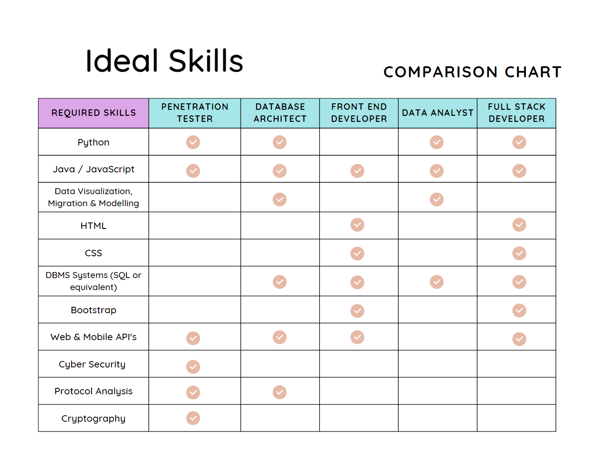
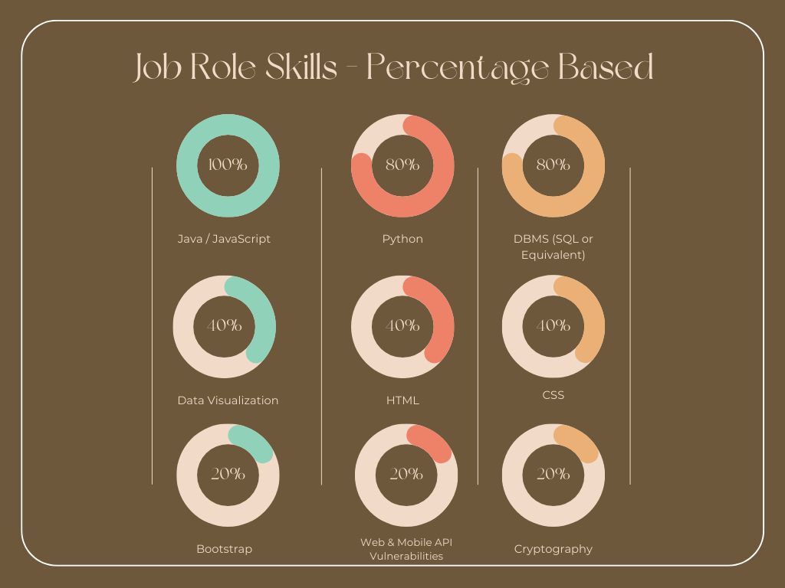

Meet the IC Team
Troy Kirk
Student Number: s3996531
Troy is Australian born, of American and British descent. A qualified Paramedic, Troy is interested in travelling, gaming, running, snowboarding, watching sport. Troy lives with Erica his wife, Blake his 10-year-old son and a 40kg mutt named Bernie. Burnie has travelled around the world with Troy and because of immigration fees might be the world's most expensive mutt. Troy's early interest in IT blossomed when he got a Sega Mega Drive for Christmas. Educational requirements led to Troy's first PC. Troy spent 10 years in the US before returning to Australia in 2021. The flexibility and remote working capabilities of the IT industry particularly appeal to Troy who has recently returned to the US.
View Troy's Personal Website
Andrew Jovanovic
Student Number: s3992800
Andrew is a mechanic from Melbourne. He is passionate about travelling, family and friends, good food, football and of course, lots of video games! Andrew's interest in IT first came in the form of gaming consoles and became an obsession when he got his first PC. This quickly led to him building his own PC. It was a lot of fun learning about what each piece of hardware did and physically putting the computer together felt like assembling a spaceship, the first boot was always so satisfying. From that moment Andrew knew he would like to pursue a career in IT. Andrew experimented with a short course in website coding which affirmed his interest. Andrew is a lifelong learner and looks forward to expanding his IT skills set.
View Andrew's Personal Website
Sasha Bekier
Student Number: s3335379
Sasha grew up in rural South Australia before moving to Melbourne, she currently lives near Bendigo in Victoria. Sasha has had a broad range of jobs including teaching, stamp describing and disability support work. Sasha is a fan of the fantasy genre and enjoys reading and Magic the Gathering. Her favourite authours are Stephen Donaldson and Steven Erikson. Sasha's interest in IT was sparked by her first computer, a TRS-80, way back in 1983. IT has been a constant in Sasha's life and she looks forward to expanding and formalising her knowledge in years to come.
View Sasha's Personal Website
Fawaz Jeneby
Student Number: s3992254
Fawaz is a first year uni student. He was born in Australia and is of Asian and African ethnicity. The eldest of six children and one of twins, Fawaz was homeschooled through high school. In between looking after his younger sibs and uni, Fawaz enjoys maths, music (he sings and plays the piano) and mobile gaming. Fawaz became interested in IT at age 14 when he was doing an online career test and trying to see what job suits him. The first fifteen answers were all IT-related and the salary prospect was high so Fawaz decided to utilise Khan Academy to make a start on learning programming. Fawaz's mathematical background led to his interest in data analytics. Fawaz hopes to obtain a strong IT foundation through his university studies.
View Fawaz's Personal Website
Christopher Watts
Student Number: s3994962
Chris has been working full time in the construction industry for 14 years in various aspects including management roles. His hobbies include surfing, watching sports and online gaming. Chris' interest in IT started when he was young playing small console games and has now branched into desktop pc gaming. Chris enjoys building PCs from scratch and troubleshooting hardware issues. Chris is eager to learn more about the IT industry and has a particular interest in information security and blockchain technologies.
View Chris' Personal Website
Psychometric Profiles
Troy
Myers-Briggs Test: Advocate, 55% Introverted, 52% Intuitive, 57% Feeling, 65% Judging, 85% Assertive.
Learning Styles Quiz: 25.8% Reflector, 34.4% Theorist, 34.4% Pragmatist, 5.5% Activist.
Big Five Personality Test: 22% Extroversion, 11% Emotional stability, 35% Agreeableness, 15% Conscientiousness, 34% Intellect / Imagination.
The result explained to me that I am a good team member. I can take lead of team if needed and I can sit back and let someone else be the focus of the group. Saying this I always like to help others and make sure I am doing everything I can to complete a goal. I do like to sit back and identify other personality types and how I can adjust my behavior to best mesh with them. When it comes to being part of a team, I am more than happy to play whatever role needs to be done whether that be a leader at the top direct others or a foot soldier at the bottom taking orders and getting the work done.
Andrew
Myers-Briggs Test: Virtuoso, 76% Introverted, 52% Observant, 54% Thinking, 58% Prospecting, 64% Turbulent.
Learning Styles Quiz: 40% Auditory, 30% Visual, 30% Tactile.
Big Five Personality Test: 22% Extroversion, 11% Emotional stability, 35% Agreeableness, 15% Conscientiousness, 34% Intellect / Imagination.
As an introverted personality, listening to others makes me feel comfortable in group settings. I typically let others talk first before thinking about my response and adding my feedback or opinion. I do feel that I am more introverted with certain types of communication, I often prefer to text than call, type than meet. This will definitely be a learning curve and something to overcome, but extremely beneficial for future projects and careers. Lastly, as my test results reflect, I like to think, a lot. I think this can be useful to my group as I could potentially add in different perspectives to an idea. The downside however is that thinking can turn into dwelling and spending to much time on a particular area to try achieving the perfect result.
Sasha
Myers-Briggs Test: Advocate, 96% Introverted, 76% Intuitive, 54% Feeling, 53% Judging, 63% Assertive.
Learning Styles Quiz: 32% Reflector, 30% Theorist, 32% Pragmatist, 6% Activist.
Big Five Personality Test: 16% Extroversion, 62% Emotional stability, 11% Agreeableness, 57% Conscientiousness, 96% Intellect / Imagination.
In a team environment I need to take active care to engage with other team members and not allow myself to fade into the background as more extroverted people take the fore. I need to be conscious of ensuring I treat other team members with respect at all times, even when they are still coming to an understanding that I have already processed. I need to remember that while feeling frustration is perfectly acceptable, it is important to weigh that frustration before expressing it and determine if the cause of the frustration will actually impede the project or if it is just annoying me personally. Lastly, I need to remember that other people process information differently to me and that that is okay.
Fawaz
Myers-Briggs Test: Entertainer, 57% Extroverted, 57% Observant, 57% Feeling, 68% Prospecting, 65% Assertive.
Learning Styles: Education Planner concluded that I am an Auditory/tactile learner.
DISC Personality Test: 33% Compliance, 25% Steadiness, 23% Dominance, 19% Influence.
According to the test results, I am a team member that can adjust to anything and give newideas. I am also a team member that will just observe what’s happening in the group and canhelp with any mistakes in the group. I need to sometimes get in and talk about ideas ifnecessary rather than just stepping back all the time and I also need to learn how to controlmyself when someone criticises me on my work and understand that they are trying to helpme rather than hurt me and I need to keep focused and follow the schedule the team gaveme and be organised.
Chris
Myers-Briggs Test: Protagonist, 79% Extroverted, 62% Intuitive, 60% Feeling, 53% Judging, 82% Turbulent.
Learning Styles Quiz: 0.167 Reflector, 0.237 Theorist, 0.237 Pragmatist, 0.237 Activist.
Big Five Personality Test: 96% Extroversion, 62% Emotional stability, 35% Agreeableness, 87% Conscientiousness, 28% Intellect / Imagination.
Very extroverted, friendly and optimistic
My test results put me as a very helpful and motivating leader. I believe this with reflect well with my team by helping the shy people be more involved. I am very task orientated and like to stick to a list and the passion that my turbulent behaviour can help with that drive.
After forming our group and reviewing everyone's profiles, it was good to see that we had a good mix of personalities. There seems to be a healthy balance of introverted and extroverted personas which can be ideal for communicating. The diversity of our group is a significant asset and in practice we have supported each other well.
Ideal Jobs
Each member of our group sees a different ideal job on their horizons. Troy and Andrew both want to be developers, Front End for Troy and Full Stack for Andrew. Sasha intends on becoming a Data Architect, Fawaz aspires to be a Quants Engineer, and, Chris wants to be a Penetration Tester.
What common elements are there?
Programming languages like Python, Java and JavaScript were the most common skills required across all of the job roles. In some cases, full stack developers required good knowledge of all three languages whereas the other roles required a high level of proficiency in either one or two languages. Surprisingly, 80% of our group also required experience in database management systems. This could include systems like SQL or NoSQL, MySQL, PostgreSQL, Oracle, and Microsoft SQL Server. This indicated that regardless of the role, it was essential to have knowledge of popular languages and database systems. These requirements may not just be for working within your own role, but more importantly be able to communicate and collaborate with others.
What differentiates each position?
Specificity is what differentiates each role. Although almost each role required knowledge of popular, common programming languages, specificity is what differentiates each role. Roles like Penetration Testing, Data Analyst and Database Architects needed more specific languages and DBMS experience as their positions focused more on backend structures and development. Front-End and Full Stack Developers required more specificity in HTML and CSS systems in order to style and interpret websites, applications, and programs to users.
How similar or different are your career plans across the group?
Again, each role shares the similarity of using a particular language, but this is mainly due to their popularity and effectiveness. Each role is vastly different from the next as they work within their own focus areas. Some roles use data, networks, and frameworks whereas other shift more towards aesthetics, functionality, and creativity.
The chart below illustrates the overlap of IT skills across the groups preferred future roles.


While this chart illustrates the same data expressed in percentages.
Industry Data
Employer Desirability
The group listed Full Stack Developer, Quants Engineer, Front End Developer, Penetration Tester and Database Architect as our ideal jobs.
The table below shows how our chosen roles rank within the scope of the Burning Glass Top Job Titles March 2017 – Feb 18 dataset. I have cast the
Quants Engineer role as IT Business Analyst and the Penetration Tester as Security Consultant in order to obtain their closest matches within the dataset.
| Job | Ranking | Total % of Job Listings |
|---|
| Front End Developer | 6th | 0.61% |
| Full Stack Developer | 17th | 0.29% |
| Data Architect | 47th | 0.14% |
| IT Business Analyst | 63rd | 0.10% |
| Security Consultant | 80th | 0.09% |
It is worthy of note that the Job Title dataset has not been manipulated and these numbers under-represent some of the jobs. Full Stack developer sees additional categories further down the list with Full Stack Java Dev ranked 70th, Full Stack .Net dev ranked 72nd and Senior Full Stack dev ranked 90th. Rolling these additional Full Stack roles into the one grouping would see Full Stack Development rise to the 10th Rank. Including Front End Web Developer & Frontend Developer with Front End Developer would bring this role up to 2nd Rank after Solutions Architect. Similar observations could be made about the other roles on our list.
Moving to the Burning Glass Top Occupations data for the same period we see more consolidated data. In first place, with 24.15% of all job listings by occupation, is Software development / engineering. Cyber Security comes in at 13th with 2.39% of listings and Data Architect at 18th with 1.24%. Database Administration is in the 12th rank and could reasonably be compiled with Data Architect producing an effective rank of 8th in the listings. Quants Engineering's closest match in the data would be Business Intelligence Dev in 21st rank.
Key Skills
IT Specific Skills
General Skills
Falling short of trawling through numerous job advertisements, required general skills are somewhat harder to identify on a role by role basis, however there are many papers pointing towards the great significance of general skills in relation to employability within the ICT sector.
Anicic and Buselic identified rapid knowledge acquisition to be the most sought after generic skill by employers followed by the capacity to identify and resolve problems, to apply knowledge in practical situations, to work in a team, to think analytically, personal responsibility, adaptability, creativity, ability to work under pressure and ability to work independently. (Anicic and Buselic 2021)
Robles identifies integrity, communication, courtesy, responsibility, social skills, positive attitude, professionalism, flexibility, teamwork, and work ethic as the top 10 'soft' skills sought after by executives in new employees. (Roubles 2012)
Stevens points towards communication skills with an emphasis on verbal communication and public speaking. (Stevens 2005)
Specific skills requirements of employers.
The most in demand IT skill according to the Burning Glass data is SQL. From the top 15, SQL, JavaScript, Java, C#, .NET, Git, Python and HTML all fall into our required skill set (8 of 15). The lowest ranked of the IT skills on our required skills list is C#, ranked 172nd
In the general skills category, Communication skills take the top rank, included in 36.4% of job listings, followed by problem solving (13.5%), organisational skills (13%), writing (12.8%), collaboration (11.8%), troubleshooting (9.4%) and planning (9.3%) in descending order. All of these skills featured prominently in the articles considered above. Contrary to Anicic and Buselic's findings, being a quick learner is ranked 27th in the burning glass data, appearing in only 1.42% of job listings.
All the members of our group are interested in programming based roles however, according to the Burning Glass Data other technical skills are also highly sought after. The three highest ranked technical skills that do not occur in our required skills set are Microsoft Windows, SAP and Graphic Design.
Conversely the general skills list sees comprehensive coverage. There are no highly ranked general skills that do not fall into the scope of our required skill set.
While none of us are inclined to realign their intent for an ideal job, we were all struck by the weight of emphasis placed on 'soft' skills in relation to employability. In the course of this research it has become clear that while technical skills may get you the interview, it is your soft skills that will get you the job over your competitors, no matter what specific role you are aiming for.
IT Technologies
Blockchain and Cryptocurrency
Blockchain
Blockchain is a decentralized, distributed and often public digital ledger. It is used to keep records of transactions between networks or peer to peer. The primary use of Blockchain technology is as a distributed ledger for Cryptocurrencies. For every transaction using Blockchain Technology a record or a block is formed and these blocks are linked or chained together providing both parties with a full, audited and unalterable transaction history. This gives the end buyer the full history and information from the first initial transaction that may have happened many owners ago. Transparency and the distributed nature of the ledgers of transactions it is very hard and time consuming to hack or disrupt the Blockchain. If you have 10 transactions in a Blockchain and 1 gets altered to change the amount of Bitcoin you have the algorithm will see that 1 block has a different ledger amount compared to the other 9, it will then change that 1 block to copy the greater consensus. Whereas if 6 out of the 10 blocks have the same information and 4 are different then the 4 will be changed to mimic the other 6. Basically if someone wants to alter a blockchain for malicious purposes they would need to change at least 51% of the blocks in the chain to gain the majority before the algorithm would propagate the hack. This process would be very time consuming and costly as each transaction is also date and time stamped to help combat this.
There are 3 common types of Blockchain:
- Permissioned or private Blockchain.
- Permissionless or public Blockchain.
- Hybrid or consortium Blockchain.
The permissioned or private Blockchain is a small scale version of the public one. Generally used in a business for Supply chain management, asset ownership or internal voting. Private Blockchain transactions are faster due to the smaller number of nodes that need to be verified during a transaction. Fewer nodes on a Blockchain also increase the security risk. The reduced number of nodes means it can be more easily altered. Typically a private Blockchain will require each node to be approved before joining the Blockchain.
Public Blockchain is, as the name would suggest, open to anyone that wishes to join the network and establish a node. It is decentralized meaning no single organization controls the Blockchain. Public Blockchains being open nature, they should be secured with cryptography and a proof of work consensus system. Generally used for Cryptocurrencies, a new block cannot be added to the chain without the node or transaction being confirmed with the consensus system, making forging transactions near impossible.
Thirdly we have a Hybrid Blockchain which is a mix of both public and private. The architecture of this Blockchain is entirely customizable and members who use this can decide on which transactions are available to everyone or who can access the Blockchain. Being controlled by a smaller peer group this can pose some risks of dishonest people but with the immutability and security that each transaction has it is still very hard to alter or manipulate.
Cryptocurrency
Cryptocurrency is a digital currency which can be used as a form of payment instead of traditional state-backed currencies such as the Euro or the British Pound. Cryptocurrency is created using encryption algorithms and use the Blockchain technology. Your digital wallet, stores your crypto coins and acts as a virtual account system in addition to tracking your cryptocurrency balances.
Bitcoin was the first cryptocurrency to receive widespread attention but subsequently the crypto market has branched into thousands of other different coins with varying implementations.
The future of Blockchain and Cryptocurrencies
The next couple of years will be interesting regarding what is next for Blockchain Technology and Cryptocurrency. Smart contracts will come into play with conditions that can be self-executed and self-enforcing. Supply chain uses are also a step forward for the Blockchain technology with each step of the way from say the farm to consumer being recorded and tracked via the Blockchain. This will keep everyone accountable on damages or health violations that can arise and create true producer/maufacturer to consumer data trails.
Blockchain Technology can impact various aspects of our lives from Finance and banking to online security as well as supply chain management. The banking sector are working on adapting Blockchain Technology to allow the exchanging of money to become more efficient, secure and faster. Some say the future of Blockchain technology can replace the bank ideology all together. Without any need for a centralized governing entity what would we need them for? One example relates to humanitarian workers in the middle of war torn African countries, many of whom have no access to banks and need to be paid in cash. NGO's and other agencies then need to hike through remote jungles with bags full of cash to pay their workers at the risk of theft, kidnapping or death. With Blockchain and Cryptocurrencies these issues can be alleviated or even completely overcome.
Cybersecurity could benefit as well with having a decentralized system rather than a centralized server with data loss, corruption and human error all factors that can be wiped out with the Blockchain technology. Instead of a hacker needing to infiltrate one system or server they would need to hit 51% of the Blockchain system at the exact time to cause any disruption. The healthcare sector could see passing of information quicker and more securely from GP's to hospitals and specialists and Government voting could be submitted in real time via the Blockchain system with more security and efficiency than present systems supply.
Blockchain technologies offer boundless potential to revolutionise the way we do business. Blockchain is a true disruptor and it's transformative nature is sure to impact on industry in many and unanticipated ways. Blockchain technologies have the potential to completely change the way the world deals with things like banking and trade, and could foreseeably result in traditional finace going the way of the dodo.
The Impact of Blockchain Technologies on Daily Life
It seems difficult to overestimate the probable impact of Blockchain technologies on our daily lives. Social media platforms will be more secure and safe from theft with Blockchain based security greatly increasing the difficulty of hacking these systems. You will have the right to voice your opinion without the risk of retaliation from the centralized company's views or ideologies. Your data is owned and published by you and not something for the company to sell off to the highest bidder.
Safety and security will be a big part with the future of Blockchain, people will be at ease more knowing their usernames and passwords are stored on encrypted Blockchain networks rather than one server that houses hundreds of millions of others usernames and passwords making it the target for would be thieves.
The main differences Blockchain and Cryptocurrencies will bring is peace of mind and trust in the system rather than an entity like a bank or the government. Crypto currency will become more and more prevalent as people will want to shy away from government regulations. Crypto, being decentralized, is not subject to national interest and fiscal policy making it a more stable form of value rather than traditional currency.
Natural Language Processing and Chatterbots.
What does it do?
Natural language Processing
The term Natural Language Processing or NLP is a broad definition used to describe the translation of languages. In the IT industry, natural language processing refers to a computer science that is used to examine human language and speech that can be converted into computing languages. This converted language can then be used to assist and further develop areas of artificial intelligence (AI), management and distribution of complex data, online monitoring, and filtration systems.
There are five key types of analysis used to handle and process languages:
- Tokenization analysis
- Lexical analysis
- Syntactic analysis
- Semantic analysis
- Pragmatic analysis
Tokenization and Lexical analysis are used to collect language and convert them into characters into a sequence of lexical tokens ('What is Tokenization in NLP – Lexalytics' 2021), these tokens are used to teach machines about words and provide a foundation to work on ('What is Tokenization in NLP – Lexalytics' 2021).
Syntactic analysis operates on understanding the logical composition of a sentence or text ('Syntactic analysis' n.d.) whereas semantic analysis uses interpretation to process sentences and pull meaning from sentences and texts ('Semantic Analysis, Explained' 2020). Both forms of analysis rely heavily on the use of correct grammar to be effective.
Finally, pragmatic analysis relies on external word knowledge to interpret a sentence's meaning and reiterate typically in a more complete, condensed form of communication ('Pragmatic Analysis | Python Natural language Processing' n.d.).
Each method of analysis can be crucial depending how they are implemented and what type of processing they will be handling. As an example, tokenization and lexical analysis could be used as tools to build a foundation of keywords to target in search engines or translation software whereas syntactic, semantic and pragmatic may be utilized in chat bots that provide assistance and guidance.
Chatterbots
Chatbots or chatterbots are software that run in the form of an application used online to service communication and interaction. These applications work by processing, analysing and translating voice or text and generating a response based on the users' requests. Chatterbots can be thought as an extension of natural language processing, where NLP provides the framework to translate the information, chatterbots are the application used to implement it online.
Currently, chatterbots are used to navigate conversation and handle low complexity tasks. The most common type of chatbots are assistance-based applications, which are typically the first point of contact for users that offer guidance and help with common pain points. The technology now allows chatbots to handle the initial contact as they typically offer up pre-generated conversation that users can interact with. This is where the software relies on the use of keywords in order to continue or navigate the conversation. As the interaction takes on more complexity, for example, where users are now asking questions or responding with sentences, the application is relying on analysing the logic and understanding of text or voice to continue the interaction. Most chatbots now are simply used as a tool to start a conversation, find a user's paint point and connect them with a person. This is simply because the technology isn't available for chatterbots to be able to handle the complexity of a conversation, yet. This is still generally reserved for humans who can process this information quicker, more effectivity and most importantly improvised.
AI and NLP will be the biggest contributing factors in seeing how chatterbots will develop. As these types of analysis and database tools continue to improve, chatterbot applications will also be able to improve. Chatterbots have proven to be critical tools used by businesses that focus heavily on customer service and experience, so investment will no doubt be possible in making these tools more effective. In future developments, chatterbots may be able to handle more complex styles of interaction or entire conversations. I can see the development of chatterbots taking a similar pathway to how voice recognition software in smart phone and home devices has. The overall product can handle more complex processes but is still quite clunky compared to the control of a human.
What is the likely impact?
Natural language processing and chatterbot applications will only continue to improve as technology continues to advance. One area that I can see drastically changing is the complexity and depth chatterbot communication will be able to provide to consumers. Chatterbots now, can only carry out certain aspects of customer service and interaction. Typically, they will guide a user towards the assistance or action they require before the task is passed on to a human that can handle the more challenging level of interaction. Further development of analysis tools in the future could see a depth of AI processing that let's chatterbot applications manage an entire complex interaction independently. A chatterbot that could manage all aspects of a conversation, from answering numerous questions, providing product or technical information, and most importantly, handle complaints, could put immense pressure on the role of support staff. The current job has already seen a reduction in roles and responsibilities as chatterbots usually manage the initial interaction. As AI processing continues to develop, chatterbots could provide personal 24/7 assistance, end to end communication, at a fraction of the cost. This will make it increasingly difficult for business trying to compete with AI, having to choose between having a real person behind a computer or minimising costs and maximising profits. AI software won't require a salary which will lead to a reduction or redundancy of the human support role.
How will this affect you?
I imagine this could have a massive impact on the way we communicate and interact in an online space, which will almost certainly expand into other areas like telephone calls, voice to text, and smart home appliances. I believe it would be a positive experience to have better NLP, chatterbot and AI processing systems integrated into high use, everyday items and provide better overall customer service and convenience.
Overall, dealing with businesses in an online space and on a telephone would be vastly different if there were chatterbot or voice recognition software in place that could manage an entire conversation. Personally, when I do have an issue online, I use chatbots for assistance which can be frustrating as they can only narrow down a topic I need to discuss with a real person, or they require my details so that someone can make contact later to discuss the issue. It would be extremely beneficial to be able to resolve an issue when it arises.
Furthermore, I can also see voice to text functions being vastly different as well. The function is a handy tool to have especially for searching long terms on google or replying to messages. However, these functions currently can be quite clunky and often misinterpret words and sentences incorrectly. With advanced software and analysis tools increasing the richness of AI databases, this could mean that human voice is understood much better. This would ultimately reduce how much I would have to check grammatical or interpretation errors and make the software more fluid and seamless.
I can see family and friends sharing a similar positive experience as well. The biggest issue I hear from older members of family is how frustrating it is to not be able to speak to a real person. If chatbots and AI processing can advance to the point where it is able to replicate a conversation with the same personality as real individual, I can see their experiences being enriched as well.
Cybersecurity
Cybersecurity is the process of protecting computer systems, networks, devices and programs from all sorts of cyber-attacks (Tunggal 2022). Recently the Australian media has made cyber security the center of everyone's attention. With recent cyber-attacks on Optus and Medibank private it has exposed the increasingly sophisticated and always evolving danger to hackers accessing and exposing our data. Attackers are always evolving new methods that are generally powered by social engineering and artificial intelligence compared to the once seen traditional data breach we were used to. As our world becomes increasingly reliant on technology as a regular part of life so do we see the development of new security programs such as cloud security solutions, multi-factor authentication and unauthorized access protocols to stay ahead of malware (Tunggal 2022). Risk of cyber-attacks is forever increasing with our ever-growing global connectivity and use of cloud storage devices. As the development of this technology is becoming complicated, as are the cyber thieves with the creation of new malware and cyber threats.
It is now common for most workplace to include cyber security training as part of a new employee's introduction period. Staff need to be educated about common cyber threats like social engineering scams, phishing, ransomware and other malware programs designed to steal intellectual property and personal data (Tunggal 2022). Cybersecurity can be broken down into four main areas of concentration. These areas are deterrence, detection, prevention and response. Deterrence can use both physical and online strategies to minimize the risk of security breach (Openpath 2022). Deterrence can start as simple as a fence, video surveillance, access gates and authorized only entries to a build. Online deterrence takes the form of passwords, multi factor authorization and captcha technology. Detection may come in the form of physical door alarms, inappropriate computer behavior or uncommon network log in locations. Prevention is seen as a way of slowing down breaches or intrusion. Online this can take the form of multiple layers of access control, data encryption, multi-factor authentication (Openpath 2022). Security breach have become a common part of the cyber world. An appropriate response to this situation is a crucial part of cyber security. Security technology products including building lockdowns, remote access and controls, and the ability to send live video feeds to first responders are all great examples of this component (Openpath 2022).
Covid 19 defiantly changed the world we live in. Before 2020 work from home was unheard of and work remotely was seen as a dream job. Since the global pandemic gripped the world, it is estimate that over 35 million American now work from home or remotely (WEF 2020). This means the number of networks and devices that link home computing to corporate platforms has grown dramatically. HP reports that global cyber-attacks are on the rise by 238% since the biggening of the pandemic (WEF 2020). Companies are having to manage these risks by increased security via virtual private networks, continuous password updates, multi factor authorization and increased cybersecurity/ IT employment. As cybercriminals are consistently developing new schemes and programs, organizations are having to invest and develop in new innovated technologies to try to stay ahead of the crime. Real-time data monitoring is a way companies are continuously updating systems and data that is used to protect the organization from cyber criminals (WEF 2020).
Security professionals can then act on data breaches quickly and avoid the risk of loss. With this data collection organizations can track information over long periods which helps to identify and predict behaviors and anomalies that occur. This method is known as trend monitoring (WEF 2020). New and developing technologies such as Artificial Intelligence and Quantum computing are starting to be used by attackers. There is growing evidence that AI could start being used as defensive tools against attacks (WEF 2020). AI could be the future of cybersecurity, however will this put millions of cyber security experts out of work? Quantum computing has been a powerful way to solve some classical mathematical problems in the past (WEF 2020). If used correctly could quantum computing be used to stay steps ahead of the programs created by cyber criminals.
In 2021 the global cyber security market was valued at approximately USD 139 billion dollars (Fortune business insights 2022). Moving forward the market is only expected to grow exponentially. Estimates are expecting the industry to double over the next 10 years to a value of USD 375 billion dollars (Fortune business insights 2022). Over the last two years the cybersecurity industry as seen dramatic increase in job availability. With the ever-growing demand for security solutions, position in the cyber security industry have risen by 7.7% since the beginning of the global pandemic (Fortune business insights 2022). There is already a growing global shortage of cybersecurity specialists. The ever-increasing need for technology to be in our daily lives and make everything we do easier has driven companies to take up a larger online presence. The negative effects of this have been the increase of criminal activity regarding fraud, theft and data breaches. Moving forward companies of all sizes will be investing more time and money into safely securing their online assets. This will only add to the position and jobs available in the cyber security industry. With opportunities becoming increasing available a recent report from ISACA's State of Cybersecurity found that 60% of companies were now reporting difficulties retaining cybersecurity professionals (Comptia 2022).
According to the Australian Bureau of Statistics, 2.1 million Australians or approximately 11 percent of the population have experienced at least one type of personal fraud in the last 2 years. That is 1 in 9 Australians (abs 2022). How will it affect you? Most likely someone in your direct family has been affected by fraud recently. Today almost everyone in our society is connected to the internet either by our smartphones, laptops, game systems or smart watches. Whether we are making purchases via online shopping, completing internet banking via an app or simply just storing bank account details, we are all vulnerable to cyberthreats. Cybersecurity is becoming even more important to everyone's daily life as it protects data from theft and damage. All our devices have multitudes of sensitive information including personal identifiable information, protected health information, intellectual property, data, and government information (Tunggal 2022). Without an antivirus protection service in place our devices cannot defend themselves against malware and cybercriminals. Cyberattacks are attempts to access our devices information that can lead to a loss of money and personal information (Readgov 2022). In our society today Wi-Fi is everywhere and during our daily life we may connect to unprotected free Wi-Fi services multi times a day. Unfortunately, it is a common occurrence to have our financial information stolen and our credit card compromised by fraudulent activities. These days cyber criminals are no longer just targeting large companies but more constantly targeting individuals with ransomware that seeks personal and financial information. They may take smaller amounts of money from credit cards and bank accounts (Readgov 2022).
Cybersecurity more than ever needs to become everyone's personal responsibility no different to locking your car while inside the shops or home while your away on holiday. The recent increase of data breaches mean that cybersecurity is no longer just important for big business and regulated industries, but now more than ever small business and private citizens are at risk of suffering irrecoverable reputational damage following data breaches (Upguard 2022).
Developments in Machine Learning
What does it do?
What is the state of the art of this new technology?
Machine Learning is defined as "the technique that improves system performance by learning from experience via computational methods," (Zhou, 2021). It literally enables machines to learn from data and thus acquire knowledge. This is accomplished by making "learning algorithms" or experiences that can be used to predict outcomes or "models" (Zhou, 2021). With the myriad of data now available worldwide, it is imperative that a system is able to collect, manage, analyse and make sense of all this information and how it can be applied in the real world.
Data analysis is at the heart of machine learning. According to Baloglu, Ratifi and Nazha (2022), "when there are a large number of variables, or their relation to the output variable is too complex, or non-linear to be described by linear lines, or even there is no obvious output variable to be predicted in the dataset,... a different approach is needed. This alternative strategy is called ML." It is revolutionary as "machine learning,..approaches problems as a doctor progressing through residency might: by learning rules from data,.. [it can handle] enormous numbers of predictors — sometimes, remarkably, more predictors than observations — and combining them in nonlinear and highly interactive ways. This capacity allows us to use new kinds of data, whose sheer volume or complexity would previously have made analyzing them unimaginable." (Obermeyer & Emanuel, 2016). In a manner of speaking, it is like The Terminator wherein the machine stores different outcomes or possibilities based on experience/data input and makes calculated decisions based on these experiences. With machine learning, though, millions of variables are stored and calculated.
What can be done now?
The applications for this technology are numerous and wide in scope. For example, data collected from satellites are used for meteorological, energy and environmental research; from a business perspective, machine learning can be used for sales and investment analysis, optimising logistics and operations research ((Johra, Verma and Paul, 2020); from a lay person point-of-view, the humble "Google search" function is a product of extensive data analysis through machine learning - mapping associations and patterns generate what we have now regarded as a common search by keyword, or by photo (Zhou, 2021). Communications (including speech recognition), software engineering; architecture (Johra, Verma and Paul, 2020); and bioinformatics (which includes genetics and cancer research), (Baloglu, Ratifi and Nazha, 2022)and robotics are among the applications of ML.
Some examples of specific machine learning successes are:
- In the medical field, machine learning has been successfully applied in the fields of ophthalmology and radiology. "For example, in ophthalmology the diagnosis of diabetic retinopathy and retinopathy of prematurity, and in radiology the diagnosis of stroke or cancers from digital images is promising." (Baloglu, Ratifi and Nazha, 2022). The digital pixels in radiographs are now bits of data that are analysed as individual variables resulting in clusters that allow clinicians to learn "contours of fracture lines, parenchymal opacities, and more," (Obermeyer & Emanuel, 2016), and covid-19 detection
- for the common person, we see an increase in the use of "Computer Vision and Natural Language Processing (NLP)" e.g. facial recognition in smartphones, Google translate, self-driving cars, conversational AIs such as Alexa, Siri, Google
- in the justice system, ML plays a big part in the implementation of cybersecurity
What is likely to be able to do be done soon (say in the next 3 years)?
Increased automation is a direct effect of increased reliance on machine learning.
The medical field, for example, is expecting to.expand the applications of ML into the subspecialties of paediatrics, (Baloglu, Ratifi and Nazha, 2022). Machine learning will allow improved prognosis, reduce human error by allowing the machine to interpret images, and improve diagnostic accuracy (Obenmeyer & Emanuel, 2016)
Analysis of non-linear big data such as in ecosystem service research (Scowen and Athanasiadis, 2021)
In economics, "[the] staggering volumes of digital information relevant to measuring and understanding the economy are generated each second by an increasing array of devices that monitor transactions and business processes as well as track the activities of workers and consumers." This means that the time is ripe for machine learning to be incorporated into economic statistics (Abraham, Jarmin, Moyer, & Shapiro, M. D., 2022).
Automated machine learning (see below) and further use of augmented reality are futuristic developments.
What technological or other developments make this possible?
The digitisation of raw data over the years has paved the way for this information to be readily available for mining and analyses. We now have a "staggering volume of information", (Abraham, Jarmin, Moyer, & Shapiro, M. D., 2022). Machine learning would have been ineffective had it not been for the existence of big data.
Hinton's 2006 Deep Learning theory paved the way for the idea that machines can learn image patterns.
Deep neural networks such as the one developed by Meta allowed the processing of larger data
What is the likely impact?
What is the potential impact of this development?
The surge in ML's popularity across various fields has given rise to the development of Automated Machine Learning (autoML). Simply put, it's machine learning without the or with limited interference from a human engineer. An application or software that can be installed and be expected to generate predictions with minimal intervention. According to Hutter, Kotthiff, and Vanschoren (2019), "this is particularly true in the booming field of deep learning, where human engineers need to select the right neural architectures, training procedures, regularization methods, and hyperparameters of all of these components in order to make their networks do what they are supposed to do with sufficient performance."
However, it should be noted that the increasing complexities of machine learning, particularly deep learning, while fascinating and far-reaching in its application, is still susceptible to bias. Zhou (2021) has enumerated the following deficiencies in machine learning: it requires an extensive amount of data which in itself can be expensive to acquire or in some cases infeasible; if the environment changes, the model may become useless; trained models are "blackboxes". ML models are so complex that it is not possible to exactly understand and explain how the ML model produced its output. Resulting in bias (Baloglu, Ratifi and Nazha, 2022).
Therefore, improved validation techniques i.e. neutrosophic logic (Varona, Lizama-Mue, & Suárez, 2021),
What is likely to change?
Machine learning will continue to displace human intervention in fields requiring data analysis.
Faster processing and more accurate data analysis will be imminent as scientists endeavour to develop more efficient algorithms that can minimise or identify biased outcomes.
Which people will be most affected and how?
Review of existing machine learning literature points to the following industries currently benefiting from sophisticated machine learning technology:
- Medicine and health care
- IT
- Business and finance
- Environmental Science
From an end user perspective, machine learning will mostly impact us (i.e. patients, consumers).
Will this create, replace or make redundant any current jobs or technologies?
Potentially, continued ML developments will replace its human counterparts in specific jobs such as construction work, medical technologists, factory work, face-to-face retailing such as banking, shopping and hospitality (as these are replaced by self serve kiosks).
How will this affect you?
In your daily life, how will this affect you?
As a millenial, the advent of machine learning has been
very helpful because in this day and age we have so much new information that was not there before. Machine learning enables us to filter out what is necessary and what is unnecessary for each individual. For example, as an IT student, my current google results and social media feeds are related to what I am studying, which saves a lot of time and effort.
It also enables me to generate results quickly and at my fingertips. Productivity is increased. The access to resources has become global and instant.
Robotics (which is an application of machine learning) is now, in a manner of speaking, child's play as exemplified by the increase in STEM toys even in places such as Kmart.
What will be different for you?
Research as we know it has been extended to include machine computation as necessary rather than optional. Where data gathering was limited to a random sample of 30 or so, researchers now have access to billions of raw data. Data mining and deep learning are occupational realities. As a student, I need to be knowledgeable in basic data science to be able to progress in any profession. It is a new language to be acquired and applied in everyday living.
How might this affect members of your family or your friends?
The older members of my family are now faced with the reality that computer technology and artificial intelligence are here to stay. Adjusting their lifestyle to accommodate this new way of doing things is a learning curve that they are growing into. Simple examples are online banking, virtual assistants, streaming and internet TV, Alexa and Google Home.
Project Idea
Overview - IC Diary
The application we have decided to create will be called IC Diary. It is a basic database application for a chronic painful bladder condition called Interstitial Cystitis or commonly referred as Painful Bladder Syndrome. It will keep track of the foods and liquids consumed during the day, medications taken as well as a pain scale colour scheme all tracked on a calendar.
Motivation
This project has a personal interest Chris as his wife suffers from Interstitial Cystitis and there are little to no apps on the app stores to help keep track of flare ups with certain food groups. According to the Melbourne Bladder Clinic it is estimated that 8-1600 people per 100,000 are affected. Unfortunately there is no cure to this condition only pain management plans to ease the severity of pain and discomfort. With so many different causes to flare ups and pain every persons experience will vary. A certain food type could cause severe pain for one and not the other. So with this daily log it will better help people suffering this condition to monitor the foods and liquids that cause them their pain.
As a group we wanted to contribute to a project that would positively impact someone’s daily life. After speaking to Chris, he briefly explained his wife’s condition and how difficult it can be to monitor and stay on top of. We thought we could spend our time and create this app that would be truly useful for other people on a day to day basis. With Chris dealing with this condition daily we could see how motivated he was and how impactful this could be for this wife and other people who suffer from IC.
Furthermore, it was important that we tackled a project that was manageable to our skill levels as well. As an introduction into the world of Information Technology, the skill set of our group varies. For some of us this is our first experience with coding HTML and CSS, whereas others have some knowledge in these areas already. Therefore, having a project that is more manageable in terms of combining software and functions will allow our group to also focus on the quality of work we produce.
Description
The application features will be basic at first. The homepage will be a calendar that will be colour coded using the pain scale colours to see an overview of the month. You will be able to click on each day and go into detail, via a text box, on exactly what food and liquid you had during the day. A medication log via a text box as well to log which types of medication you had taken like paracetamol, Ibuprofen or stronger pain killers. You can also add how many times you had to go to the toilet to urinate as during flare ups this can increase dramatically.
There will be a pain scale as previously stated that will be colour coded with 4 colours. Green representing no pain, yellow being little discomfort or pain. Orange for manageable pain and discomfort or red for severe pain causing the use of strong pain killers and stopping you from doing your day to day routines. This will be visible via the homepage so you can see which days of the month you had which colour and clicking on them to see what may have caused this pain. There will be a comments section to note what type of pain you had, such as a stabbing pain or pressing discomfort.
The application will have a daily log notification to remind you at certain intervals throughout the day to input the required data to help keep track of your condition and get the most out of the application.
From the homepage there will be an add doctor appointments button so you will be notified when they are upcoming. You will be able to have an overview of your entire report so your Doctor can see the run down on how you and your body have been doing with raw data but this will come in version 2.
This application will be free for all with no log in required and no fees or subscription services.
Version 2 will have added features such as setting up an account so you can keep the data across multiple devices. The pain comments section will be updated to have a couple of common descriptions to select from. The medication will have common ones added as well. We will add a substitution list for common ingredients that can cause flare ups and what you can use instead.

Tools and Technologies
For this app to be created I will be using JavaScript through the react.js framework as it can be used for IOS, Android and web browser. It is a very versatile and easy to use language which is used by all modern browsers. It gives access to a full JavaScript library.
React native will give us access to a collection of special react components. It connects the JavaScript language to specific platforms, like IOS and Android, without having to learn specific languages to those platforms. It can also give us the option to access the native platforms API’s such as camera, Notifications and the GPS tracking.
We will use the EXPO CLI to create and ship the app to different platforms. It uses the Reach Native library and helps configure the JavaScript language to be interpreted by IOS and Android devices.
As we are writing the code we can download and see in real-time how the app is progressing by using EXPO GO on our devices. We will need to have Node.js download as some packages will be using this to run.
For storing of all this information we will required the use of MySQL.
There are 2 main disadvantages with using JavaScript, one being the security side. Since JavaScript code is executed via the client side it is far easier for bugs and code issues to be used for malicious purposes. To some browsers will interpret the code differently causing some minor detail changes for the end user.
Required Skills
To get this project running we will need to learn how to code in JavaScript, which we will need to download React.js. We will also need to be able to use a source code editor such as Visual Studio Code, Notepad++ or Sublime Text. We will need to be able to use the EXPO CLI and know the correct commands that go with this. Lastly we will need to know how to configure the special components that come with the React Native Library.
Outcomes
If this project were to be successful we will have an application that Interstitial Cystitis and Painful Bladder Syndrome sufferers can use and interact with to better understand how their body works and with what foods and liquids and at certain times of the month. They will be able to have all this information in one easy to go to app. This will benefit sufferers greatly to keep on top of which foods to steer clear of.
References
abs(2022) 1 in 9 Australians experienced personal fraud 2020-21. Available at: https://www.abs.gov.au/media-centre/media-releases/1-9-australians-experienced-personal-fraud-2020-21 (accessed: 4 January 2023)
Comptia(2022) Cybersecurity trends research. Available at: https://www.comptia.org/content/research/cybersecurity-trends-research (accessed: 31 December 2022)
Fortune business insights(2022) Cyber Security Market Size. Available at: https://www.fortunebusinessinsights.com/industry-reports/cyber-security-market-101165 (accessed on 31 December 2022)
openpath(2022) Security Technology. Available at: https://www.openpath.com/blog-post/security-technology. (accessed 4 January 2023)
Readgov (2022) Cybersecurity. Available at https://www.ready.gov/cybersecurity (Accessed: 2 January 2023)
Tunggal (2022) Why is Cybersecurity Important? Available at: https://www,upguard.com/blog/cybersecurity -important (Accessed: 3 January 2023)
Upguard (2022) Cyber Security Important. Available at https://www.upguard.com/blog/cybersecurity-important (accessed: 31 December 2022)
World Economic Forum (2020) Available at: https://jp.weforum.org/reports/future-series-cybersecurity-emerging-technology-and-systemic-risk/ (Accessed 5 January 2023)
'Pragmatic Analysis | Python Natural Language Processing', viewed 5 January 2023, https://subscription.packtpub.com/book/big-data-&-business-intelligence/9781787121423/3/ch03lvl1sec27/pragmatic-analysis.
'Semantic Analysis, Explained' 2020, MonkeyLearn Blog, viewed 5 January 2023, https://monkeylearn.com/blog/semantic-analysis/.
'Syntactic analysis' Engati, viewed 5 January 2023, https://www.engati.com/glossary/syntactic-analysis.
'What is Tokenization in NLP? – Lexalytics' 2021 viewed 5 January 2023, https://www.lexalytics.com/blog/tokenization/
Abraham, K. G., Jarmin, R. S., Moyer, B., & Shapiro, M. D. (2022). Big data for twenty-first-century economic statistics (K. G. Abraham, R. S. Jarmin, B. Moyer, & M. D. (Matthew D. Shapiro, Eds.). University of Chicago Press.
Baloglu O, Latifi SQ, Nazha A (2022). What is machine learning?Archives of Disease in Childhood - Education and Practice 2022;107:386-388.
Hutter, F., Kotthoff, L., & Vanschoren, J. (2019). Automated Machine Learning: Methods, Systems, Challenges. Springer International Publishing AG. https://doi.org/10.1007/978-3-030-05318-5
Johri, P., Verma, J. K., & Paul, S. (2020). Applications of Machine Learning (P. Johri, J. K. Verma, & S. Paul, Eds.; 1st ed. 2020.). Springer Singapore. https://doi.org/10.1007/978-981-15-3357-0
Marr, B. (2022, October 12). 27 incredible examples of AI and machine learning in practice. Forbes. Retrieved January 4, 2023, from https://www.forbes.com/sites/bernardmarr/2018/04/30/27-incredible-examples-of-ai-and-machine-learning-in-practice/?sh=6b8efa737502
Obermeyer, Z., & Emanuel, E. J. (2016). Predicting the Future - Big Data, Machine Learning, and Clinical Medicine. The New England journal of medicine, 375(13), 1216–1219. https://doi.org/10.1056/NEJMp1606181
Scowen, M., Athanasiadis, I. N., Bullock, J. M., Eigenbrod, F., & Willcock, S. (2021). The current and future uses of machine learning in ecosystem service research. The Science of the Total Environment, 799, 149263–149263. https://doi.org/10.1016/j.scitotenv.2021.149263
Varona, D., Lizama-Mue, Y., & Suárez, J. L. (2021). Machine learning's limitations in avoiding automation of bias. AI & Society, 36(1), 197–203. https://doi.org/10.1007/s00146-020-00996-y
Zhou, Z.-H. (2021) "1," in Machinery. learning. Singapore: Springer Nature Singapore.
Zhou, Z.-H. (2016, June 7). Learnware: On the future of Machine Learning - Frontiers of Computer Science. SpringerLink. Retrieved January 4, 2023, from https://link.springer.com/article/10.1007/s11704-016-6906-3
Robles, Marcel M. "Executive Perceptions of the Top 10 Soft Skills Needed in Today's Workplace." Business communication quarterly 75.4 (2012): 453–465. Web.
Stevens. "What Communication Skills Do Employers Want? Silicon Valley Recruiters Respond." Journal of employment counseling. 42.1 (2005): 2–9. Web.
Anicic, Katarina Pazur, and Vjeran Buselic. "Importance of Generic Skills of ICT Graduates-Employers, Teaching Staff, and Students Perspective." IEEE transactions on education 64.3 (2021): 245–252. Web.